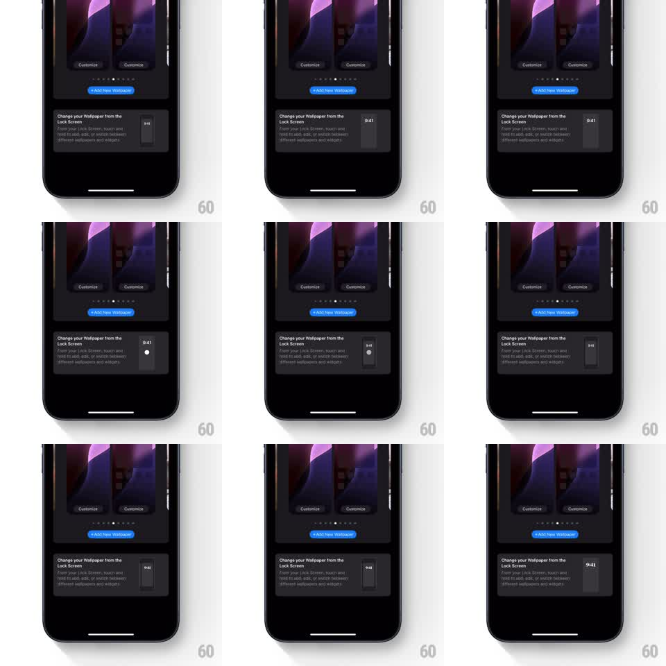

Media
Frame-by-frame

Rebuild this animation 1:1: Apple's wallpaper tip - a looping demo on the tip card simulates a long-press on the lock screen, which shrinks to reveal the customize interface.

Rebuild this animation 1:1: Apple's wallpaper tip - a looping demo on the tip card simulates a long-press on the lock screen, which shrinks to reveal the customize interface. ## Integration Integration: stack-agnostic spec - springs given as stiffness/damping, timed motions as duration + curve; map every value to your framework and animation library of choice. ## Scene The wallpaper gallery (two wallpaper cards with Customize buttons, an "+ Add New Wallpaper" button, page dots) above a tip card: "Change your Wallpaper from the Lock Screen" with explainer text and a small demo phone showing the lock screen. ## Motion spec Pattern: looping long-press simulation, ~3s cycle. - A touch dot appears on the demo lock screen and holds (the dot's ring fills over 500ms to signal the long-press). - The demo lock screen shrinks with a parallax wobble (scale 1 to 0.85, 400ms, ease-in-out), the time and wallpaper separating slightly in depth. - The customize interface fades in around the shrunken screen (250ms), showing the wallpaper switcher strip. - The state holds 800ms, then releases: the screen springs back to full (spring stiffness 300 damping 16) and the loop restarts after a 600ms pause. - The tip card's text and the gallery behind stay static. ## Calibration - The ring fill is the long-press cue - without it the shrink reads as a glitch. - The depth split between the clock layer and wallpaper is small (a few pixels of parallax). ## Reduced motion Demo shows its final state statically. ## Don't miss - The demo runs inside the small phone thumbnail on the tip card, not on the main wallpaper cards. - The loop pauses at both ends - it demonstrates, it does not churn.